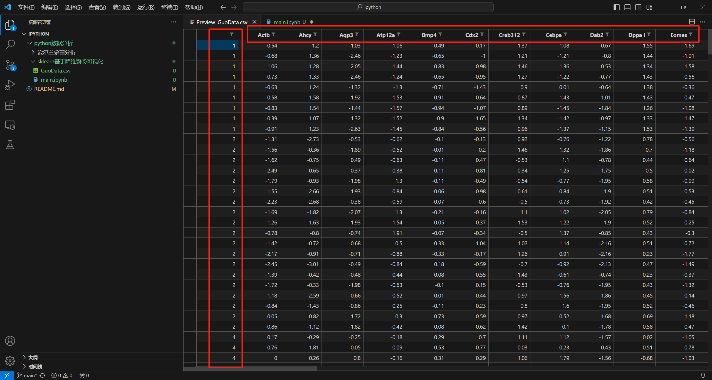
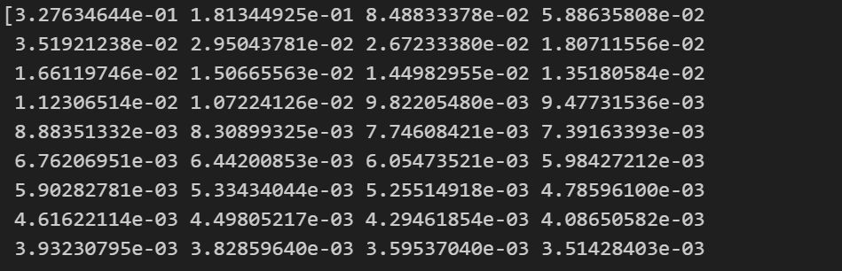

1 简介
我们对数据进行分析前，比如对数据进行分类、聚类之前，为了避免后续处理过程中维度爆炸，也为了过滤一些噪声数据，可视化数据，对数据进行适当降维是有必要的。常见的降维算法有：pca和t-sne，前者适用于线性多维度，后者适用于非线性的多维度。而且大多数情况来看，如果维度越高，线性程度越不明显，所以维度高的情况下还是用t-sne效果会好。
数据集和代码原出处：https://gitlab.diantouedu.cn/QY/test1。
除了原本有的内容，还有一些自己的思考和代码的更改、补充。
数据集和完整代码在我仓库可以找到，https://github.com/Guoxn1/ai。
本次实验内容主要是先对数据集进行降维，用到了PCA算法，自己又学习实现了t-sne算法，毕竟这数据谁也很难判断是否是更适合线性还是非线性。数据维度有48维，也很难说维度是否高低，但我感觉挺高的，都用一下看一下效果。
2 数据
这是来自Guo
等人的一些单细胞基因表达数据。从受精卵到囊胚的单细胞基因表达分析揭示细胞命运决定的解决方案。
简单来看：是一个名叫GuoData.csv的csv文件。大致内容如下：

其中最左侧的一列是细胞的类型，有1，2，4，8，16，32，32TE，32ICM，64PE，64ICM，64TE等几种，分别对应细胞的几个阶段，其余的列表示各种基因表达物质，数据的值可以看作表示含量大小。
通过这篇博客会掌握pca数据降维，并对降维后的数据进行k-means、db-scan和高斯聚类。
3 pca降维
pca先降维，然后再对数据进行可视化展示。
这里一般降维到2或3维，可以用plt画出来，一般是画散点图。
横轴和纵轴一般就是pc1和pc2，不同颜色的点代表不同的细胞类型画到上面。
3.1 基础降维
直接调用现成的sklearn的api。
1 2 3 4 5 6 7 8 9 10 11 12 13 14 15 16 17 18 19 20 21 22 23 24 25 26 27 28 29 30 31 32 33 34 35 36 37 38 39 from sklearn.decomposition import PCAfrom sklearn.preprocessing import StandardScalerimport matplotlib.pyplot as pltimport pandas as pd'GuoData.csv' )'Unnamed: 0' ]"Unnamed: 0" ])2 )"pca1" ,"pca2" ])"Cell_label" ] = cell_labels"tab10" ,len (unique_cell_types))10 ,6 ))for i,cell_type in enumerate (unique_cell_types):"Cell_label" ]==cell_type]"pca1" ],subset["pca2" ],label = str (cell_type),cmap=colormap,color=colormap(i))'PCA on the Dataset (colored by cell type)' )'Principal Component 1' )'Principal Component 2' )'Cell Type' , bbox_to_anchor=(1.05 , 1 ), loc='upper left' )True )
pca
3.2 如何知道降维能力
pca降维的原理就不多说了，pca就是靠着前几个较大的特征向量，所以能比较好的还原数据，那么，我如何知道还原的如何呢？究竟多少个取特征向量就可以了呢？
可以计算它的特征向量占总的比例。以“需要多少个主成分（PC）才能解释数据中80%以上的数据？”为例。
1 2 3 4 5 6 7 8 9 10 11 12 13 import numpy as np0.8 )[0 ][0 ]+1 print (num_components)
可以看一下特征值：

image-20230926173933235
可以看出确实是前面几个比较大，后面越来越小。
画一个图来感受：
1 2 3 4 5 6 7 8 9 10 11 12 13 14 plt.figure(figsize=(10 ,6 ))range (1 ,len (pca.explained_variance_ratio_)+1 ),pca.explained_variance_ratio_,alpha=0.5 , align='center' , label='Individual explained variance' )range (1 ,len (pca.explained_variance_ratio_)+1 ),cumulative_variance,where='mid' , label='Cumulative explained variance' )0.8 , color='r' , linestyle='--' , label='80% explained variance' )'g' , linestyle='--' , label='Number of components for 80% variance' )'Explained Variance Ratio' )'Principal Components' )'best' )'Explained Variance by Different Principal Components' )"output_plot/80.png" )
确实明显看到11处达到了80%，随着特征值数目变多，可以表达的数据变多，但是趋势变缓。
3.3
何种组合的pc（特征值）表示数据最佳
以“哪对组合的 PC 1,2 和 3 能够最好地将 2 细胞阶段与其余阶段分开（例如
PC 1&2、1&3 或
2&3）”为例。探究哪种组合会对2细胞表示最佳，即可以很好的分开。
一般直观的判断需要可视化，那么就需要列出这三种组合下，pca所能画出的散点图。
1 2 3 4 5 6 7 8 9 10 11 12 13 14 15 16 17 18 19 20 21 22 23 24 25 26 27 28 29 30 31 32 33 34 35 36 37 38 39 40 41 42 43 44 45 46 47 from sklearn.decomposition import PCAfrom sklearn.preprocessing import StandardScalerimport matplotlib.pyplot as pltimport pandas as pddef create_scatter (pc1,pc2,df ):"Cell_label" ]12 ,8 ))"tab10" ,len (unique_cell_types))for i,cell_type in enumerate (unique_cell_types):"Cell_label" ]==cell_type]str (cell_type),cmap=colormap,color=colormap(i))'Principal Component 1' )f"{pc1} & {pc2} " )'Principal Component 2' )'Cell Type' , bbox_to_anchor=(1 , 1 ), loc='upper left' )True )f"output_plot/{pc1} _{pc2} .png" )'GuoData.csv' )'Unnamed: 0' ]"Unnamed: 0" ])3 )"pc1" ,"pc2" ,"pc3" ])"Cell_label" ] = cell_labels"pc1" ,"pc2" ,pca_df)"pc2" ,"pc3" ,pca_df)"pc1" ,"pc3" ,pca_df)
可以明显看出来2号在pc1和pc3里面被分配在了左上方，分成独立的一堆，效果最好。
4 t-sne 降维
大差不差，调用api，感觉自己是个调用api的猴子
代码和pca差不多，就是api换了
1 2 3 4 5 6 7 8 9 10 11 12 13 14 15 16 17 18 19 20 21 22 23 24 from sklearn.manifold import TSNE0 2 , 2 "tsne1" ,"tsne2" ])"Cell_label" ] = cell_labels10 ,6 ))for i,cell_type in enumerate (unique_cell_types):"Cell_label" ]==cell_type]"tsne1" ],subset["tsne2" ],label = str (cell_type),cmap=colormap,color=colormap(i))'tsne on the Dataset (colored by cell type)' )'Principal Component 1' )'Principal Component 2' )'Cell Type' , bbox_to_anchor=(1 , 1 ), loc='upper left' )True )'output_plot/tsne.png' )
可见tsne的划分中各类还是比较明显的，这也应证了多维数据tsne的降维效果好一点。
我们同样看一下多少ts的值可以表示超过80%的数据，之前pca是需要11个维度。很可惜：
t-SNE
是一种非线性降维方法，与主成分分析（PCA）等线性降维方法不同，它不提供解释方差比例。因此，在
t-SNE 中无法直接计算解释方差比例来确定维度数量。
如果有看到有关于tsne的评价指标，可以联系我，探讨一下。
5 肘部法则
从pc1_pc2这个图里面可以看出来，可以分成三堆，应该是最佳的。
堆数太少，聚类效果差，可以想象整个都是一堆，肯定不咋好。
堆数太多，聚类效果同样很差，虽然每个堆内的距离很小，但是要么就过拟合，要么就计算量大，也不是很好的分类结果。
最好的情况就是我们选一个最佳的分类效果，堆数不多，但是能类内的距离也不大。
考虑这一法则。
肘部法则是一种常用的聚类分析方法，用于确定最佳聚类数。
这一法则在上面pca时也能体现出来，我们仅用11个pc（特征值）的值就可以表示80%的数据，其实2个pc值也能表示50%的数据了。
这就没必要再多增加pc的值来表示更多的数据了，感觉有点得不偿失。
k-means就是一个最好的例子，在使用 KMeans
算法进行聚类时，通常会尝试不同的聚类数，并选择惯性最小的聚类结果作为最终的聚类结果。聚类结果的惯性是指聚类结果与聚类中心的距离平方和，越小说明分类越明显。
1 2 3 4 5 6 7 8 9 10 11 12 13 14 15 16 17 18 19 20 21 22 23 24 25 26 27 28 29 30 31 32 33 34 35 import pandas as pdfrom sklearn.preprocessing import StandardScalerfrom sklearn.cluster import KMeansfrom sklearn.decomposition import PCAimport matplotlib.pyplot as pltfrom mpl_toolkits.mplot3d import Axes3D"GuoData.csv" )"Unnamed: 0" ])sum ().sum ()if missing_values == 0 :range (1 , 15 ) for i in clusters_range:10 )10 ,6 ))'o' , linestyle='--' )'Elbow Method' )'Number of Clusters' )'Inertia' )True )
可以看到，在聚类数目等于3，4的时候，那个点似乎达到了“肘部法则”的点。
所以对于kmeans最好的聚类效果不是簇越大越好而是那个肘部点最好。
5 聚类
5.1 普通聚类
未经过pca降维的48维高维数据进行聚类。
按理说这应该放在最前面说，因为直接聚类的效果不好，这样的话再缓慢转移话题到降维上。
但现在出现也无妨，最主要是想把降维不降维的聚类放在一块对比。
1 2 3 4 5 6 7 8 9 10 11 12 13 14 15 16 17 18 19 20 21 22 23 24 25 26 27 28 29 30 31 32 33 34 35 36 37 38 39 40 41 42 43 44 45 import pandas as pdfrom sklearn.cluster import KMeans, DBSCANfrom sklearn.mixture import GaussianMixture"GuoData.csv" )0 ]1 :]3 ,n_init=10 ).fit(features)4.5 , min_samples=8 ).fit(features)3 , covariance_type='full' ).fit(features)'原始类别' : labels, '聚类结果' : kmeans_clusters})'原始类别' : labels, '聚类结果' : dbscan_clusters})'原始类别' : labels, '聚类结果' : gmm_clusters})for label in kmeans_comparison["聚类结果" ].unique():"原始类别" ][kmeans_comparison["聚类结果" ]==label].value_counts()3 )print (f'KMeans聚类结果{label} 中，出现原始类别{max_labels} 的次数分别是{max_counts} ' )for label in dbscan_comparison["聚类结果" ].unique():"原始类别" ][dbscan_comparison["聚类结果" ]==label].value_counts()3 )print (f'dbscan聚类结果{label} 中，出现原始类别{max_labels} 的次数分别是{max_counts} ' )for label in gmm_comparison["聚类结果" ].unique():"原始类别" ][gmm_comparison["聚类结果" ]==label].value_counts()3 )print (f'高斯聚类结果{label} 中，出现原始类别{max_labels} 的次数分别是{max_counts} ' )
输出结果如下：
1 2 3 4 5 6 7 8 9 10 11 KMeans聚类结果0中，出现原始类别['32 ICM', '64 PE', '64 EPI']的次数分别是[45, 44, 19]
可见高斯聚类和KMeans聚类相似，但是dbscan聚类效果并不好，很多类被分到了-1，也就是噪声类。
dbscan调参的话效果也不好，很多类别被划分到-1类，也就是噪声类。
高维聚类运行时间长，聚类效果差。
5.1 基于pca
聚类之前经过pca降维后的数据。
分别使用kmeans、dbscan、高斯混合聚类。
1 2 3 4 5 6 7 8 9 10 11 12 13 14 15 16 17 18 19 20 21 22 23 24 25 26 27 28 29 30 31 32 33 34 35 36 37 38 39 40 41 42 43 44 45 46 47 48 import pandas as pd from sklearn.decomposition import PCAimport matplotlib.pyplot as plt 2 )1 :]0 ]3 ,n_init=10 ).fit(reduced_features)0.8 , min_samples=8 ).fit(reduced_features)3 , covariance_type='full' ).fit(reduced_features)3 ,ncols=1 ,figsize=(12 ,20 ))0 ].scatter(reduced_features[:, 0 ], reduced_features[:, 1 ], c=reduced_kmeans_clusters)0 ].set_title('KMeans ' )0 ].set_xlabel('Principal Component 1' )0 ].set_ylabel('Principal Component 2' )1 ].scatter(reduced_features[:, 0 ], reduced_features[:, 1 ], c=reduced_dbscan_clusters)1 ].set_title('dbscan ' )1 ].set_xlabel('Principal Component 1' )1 ].set_ylabel('Principal Component 2' )2 ].scatter(reduced_features[:, 0 ], reduced_features[:, 1 ], c=reduced_gmm_clusters)2 ].set_title('高斯 ' )2 ].set_xlabel('Principal Component 1' )2 ].set_ylabel('Principal Component 2' )"output_plot/reduced_clusters.png" )
原图就是3中提到的pca降维，这里做聚类，三类在直观上能分辨出来，可见分类效果都还不错的。
三维可视化：
1 2 3 4 5 6 7 8 9 10 11 12 13 14 15 16 17 18 19 20 21 22 23 24 25 26 27 28 29 30 31 32 33 34 35 36 37 38 39 40 41 42 43 44 from sklearn.decomposition import PCAimport matplotlib.pyplot as plt 3 )12 , 20 ))311 , projection='3d' )312 , projection='3d' )313 , projection='3d' )0 ], reduced_features[:, 1 ], reduced_features[:, 2 ], c=kmeans_clusters)'KMeans' )'Principal Component 1' )'Principal Component 2' )'Principal Component 3' )0 ], reduced_features[:, 1 ], reduced_features[:, 2 ], c=dbscan_clusters)'dbscan' )'Principal Component 1' )'Principal Component 2' )'Principal Component 3' )0 ], reduced_features[:, 1 ], reduced_features[:, 2 ], c=gmm_clusters)'Gorssian mixture model' )'Principal Component 1' )'Principal Component 2' )'Principal Component 3' )"output_plot/pca_3d_clusters.png" )
5.2 基于tsne
这里其实原理都一样，但是由于tsne在前面做了，而且分类效果也不错，所以这里也做一下。
降维后的数据，聚类的话，k大眼一扫也应该是3。但是这里我们特殊一点，试两个，一个就是3，那必然聚成3堆最明显的。
还有一个就是10，因为原本就是10类，pca降维之后从感觉是看，是很难聚成和原来相似的10簇的。
看看tsne聚成10类后是否还和原先的相似（当然可以看出来确实会相似的）
1 2 3 4 5 6 7 8 9 10 11 12 13 14 15 16 17 18 19 20 21 22 23 24 25 26 27 28 29 30 31 32 33 34 35 36 37 38 39 40 41 42 43 44 45 46 47 48 49 from sklearn.manifold import TSNEimport pandas as pdfrom sklearn.cluster import KMeans, DBSCANfrom sklearn.mixture import GaussianMixture'GuoData.csv' )'Unnamed: 0' ]"Unnamed: 0" ])0 2 , 2 3 ,n_init=10 ).fit(tsne_data)5 ,min_samples=5 ).fit(tsne_data)3 , covariance_type='full' ).fit(tsne_data)3 ,ncols=1 ,figsize=(12 ,20 ))0 ].scatter(tsne_data[:,0 ],tsne_data[:,1 ],c=tsne_kmeans_clusters)0 ].set_title("tsne_kmeans" )0 ].set_xlabel('ts 1' )0 ].set_ylabel("ts 2" )1 ].scatter(tsne_data[:,0 ],tsne_data[:,1 ],c=tsne_dbscan_clusters)1 ].set_title("tsne_dbscan" )1 ].set_xlabel('ts 1' )1 ].set_ylabel("ts 2" )2 ].scatter(tsne_data[:,0 ],tsne_data[:,1 ],c=tsne_gmm_clusters)2 ].set_title("tsne_gmm" )2 ].set_xlabel('ts 1' )2 ].set_ylabel("ts 2" )"output_plot/tsne_clusters.png" )
可以对比上面4所提到的tsne降维的原始图，明显区分出来，三种聚类效果相似，效果也不错。
如果是10类能划分成原来的10类吗？设置参数聚类数为10。
直接给结果：
kmeans和高斯聚类效果相似，但更倾向于把右上侧（坐标大概是(-18,-8)）的两小堆聚类为一堆，而把右侧的两堆聚类为三堆。密度聚类经过调参，效果一般，它更倾向于把右上角所有的小类聚类为一堆。可见tsne降维效果真的很好，当聚类数设置为10时，它就快要把原来的10类也原封不动聚类出来了。当然降维必然有一些数据的丢失，所以也不可能完完全全的再聚成原来一模一样的10类。
既然都做到这了，就送佛送到西，再看看三维的。其实和pca降维后的三维聚类差不多。
1 2 3 4 5 6 7 8 9 10 11 12 13 14 15 16 17 18 19 20 21 22 23 24 25 26 27 28 29 30 31 32 33 34 35 36 37 38 12 , 20 ))311 , projection='3d' )312 , projection='3d' )313 , projection='3d' )0 ], reduced_features[:, 1 ], reduced_features[:, 2 ], c=tsne_kmeans_clusters)'KMeans' )'ts 1' )'ts 2' )'ts 3' )0 ], reduced_features[:, 1 ], reduced_features[:, 2 ], c=tsne_dbscan_clusters)'dbscan' )'ts 1' )'ts 2' )'ts 3' )0 ], reduced_features[:, 1 ], reduced_features[:, 2 ], c=tsne_gmm_clusters)'Gorssian mixture model' )'ts 1' )'ts 2' )'ts 3' )"output_plot/tsne_3d_clusters.png" )
如果这篇博客给到您帮助，我希望您能给我的仓库点一个star，这将是我继续创作下去的动力。
我的仓库地址，https://github.com/Guoxn1?tab=repositories